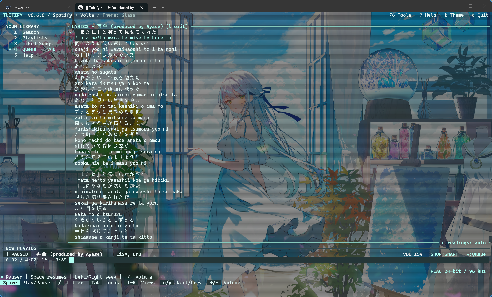
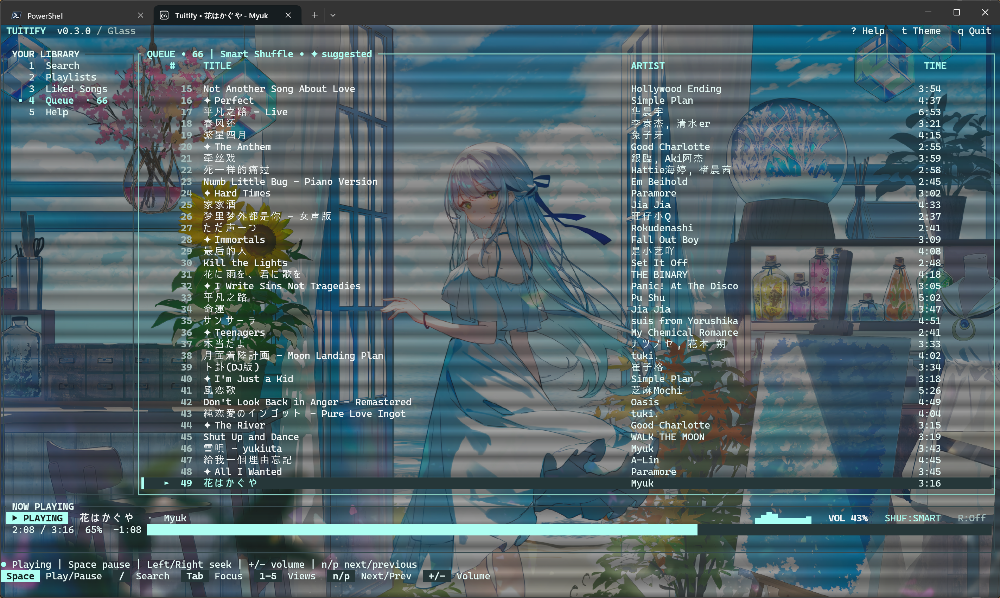

TERMINAL,
CRAFTED.
Your music, with room to think. A native Rust player for Volta lossless, Spotify Premium, and free YouTube Music. Built for Windows Terminal. Played with your keyboard.
State serialized to disk. Queue & position will restore on next boot.
Is this the real life? Is this just fantasy?
Caught in a landslide, no escape from reality
Sends shivers down my spine, body's aching all the time...
Goodbye, everybody, I've got to go
Gotta leave you all behind and face the truth


Desktop illustration / mobile native capture · Try the silent browser demo ↗
Take it for a spin.
A faithful, silent browser simulation. Switch views, cycle themes, start Track Radio. Everything with the keyboard.
Your keyboard. Your player.Try the controls in a silent browser demo.Open demoClose demo
Sample tracks / no Spotify connection / no audio
Focus the terminal panel to use shortcuts. Buttons and form controls keep their normal keyboard behavior.
The real player has more to explore. Run tuitify demo for a native demo with fictional data, no account needed.
Built differently.
A native player with a queue you can shape, lyrics you can follow, and a spectrum drawn from the audio.
- LANGUAGE
- RUST
- PLATFORM
- WINDOWS x64
- DESKTOP CLIENT
- NOT REQUIRED
- LICENSE
- MIT
Zero Electron.
A native Rust application, with no Electron shell or desktop client required. Audio plays through Windows output.
Timed Lyrics & Spectrum.
Read timed lyrics from LRCLIB that automatically follow song progression, paired with a live audio spectrum.
The Queue Protocol.
Add, reorder, filter, and undo. Spotify Track Radio uses Deezer artist similarity. Your queue and position return with playback paused when you relaunch.
Inside the player.
Real captures from Tuitify. Switch views, then open a capture at full size.


Preview unavailable. Open the full capture to view the player.
Less overhead.
More listening.
Your terminal is already open. Your music can live there, too.
Written in Rust. Native Windows audio. One executable that keeps your music close and your desktop clear.
The player
- ✓ No Electron shell
- ✓ No Spotify Desktop requirement
- ✓ Windows media key support
- ✓ Keyboard navigation throughout
Your session
- ✓ Queues and preferences saved locally
- ✓ Restored playback starts paused
- ✓ Six built-in themes
- ✓ MIT licensed source
Volta lossless playback requires a connected personal Volta application and FFmpeg. Spotify audio requires Premium. Public YouTube Music search works without an account; availability depends on your connection.
Read how playback works ↗Keep your rhythm.
Use your keys.
Click a key below to try its action in the silent browser demo. In the native player, your keyboard does the rest.
Start listening.
One executable. No Rust installation needed. Download Tuitify and let the music in.
Download TuitifyFirst, download the executable or ZIP.
Then run tuitify. Free music opens automatically; F6 connects your Spotify account or Google music library.
Find a song. Press Enter. You’re home.
Download the v0.6.0 Windows x64 executable. No Rust toolchain is needed. Spotify audio requires Premium; Volta needs your personal application and FFmpeg; free music uses public YouTube videos. Missing playback tools are prepared on first launch; music search needs Python 3.10+.
Extract the ZIP and run .\scripts\install.ps1 to install for your Windows user and add Tuitify to PATH. Open a new terminal, then run tuitify anywhere.
Run tuitify demo for the native TUI with isolated fictional data and simulated playback. A normal launch prefers connected Volta with FFmpeg, using your Spotify library when connected; then Spotify Premium or free YouTube Music. F6 connects accounts; use the same Spotify account in both Spotify authorization steps. Later launches restore the queue paused. The browser demo above is a separate, silent simulation.
A few things
to know.
Still curious? Read the full README ↗
Do I need Spotify Premium?
Only for Spotify audio. Connect your personal Volta application for matched lossless audio with Spotify libraries, or run tuitify for free YouTube Music when no other provider is connected. Playback uses public videos, which YouTube may block or restrict on some connections. The native demo needs no account or audio device.
Does Spotify Desktop need to be open?
No. Tuitify streams and plays audio directly. Windows media keys work while you’re doing something else.
How does sign-in work?
Public music search needs no login. F6 Tools connects Spotify or a Google music library and returns to the player. Use the same account for both Spotify authorizations; tokens stay in Windows Credential Manager. Google library credentials are encrypted for your Windows user; library sign-in does not grant access to restricted videos.
Where does my data go?
Preferences, queues, and listening totals stay on your PC. There’s no analytics collection. Discord presence is enabled by default and shares song details with your local Discord client. Read the full explanation of local storage and Discord presence ↗
▄▄▄█████▓ █ ██ ██▓▄▄▄█████▓ ██▓ █████▒▓██ ██▓
▓ ██▒ ▓▒ ██ ▓██▒▓██▒▓ ██▒ ▓▒▓██▒▓██ ▒ ▒██ ██▒
▒ ▓██░ ▒░▓██ ▒██░▒██▒▒ ▓██░ ▒░▒██▒▒████ ░ ▒██ ██░
░ ▓██▓ ░ ▓▓█ ░██░░██░░ ▓██▓ ░ ░██░░▓█▒ ░ ░ ▐██▓░
▒██▒ ░ ▒▒█████▓ ░██░ ▒██▒ ░ ░██░▒░▒█░ ░ ██▒▓░
▒ ░░ ░▒▓▒ ▒ ▒ ░▓ ▒ ░░ ░▓ ░ ▒ ░ ██▒▒▒
░ ░░▒░ ░ ░ ▒ ░ ░ ▒ ░ ░ ▓██ ░▒░
░ ░░░ ░ ░ ▒ ░ ░ ▒ ░ ░ ░ ▒ ▒ ░░
░ ░ ░ ░ ░
Less desktop.
More music.
Free, open-source, and one download away. Standalone Windows x64 player. Download the EXE, or use the ZIP installer to add it to PATH.